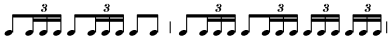

«Болеро» М. Равеля
«Болеро» – последнее симфоническое произведение Равеля, самый знаменитый его шедевр – было создано в 1928 году по заказу известной балерины Иды Рубинштейн. Для своего концертного выступления она попросила композитора оркестровать для нее одну из пьес испанского композитора Альбениса. В связи с этим заказом у Равеля возникла мысль о самостоятельном произведении на испанскую тему.
Хореографическая жизнь равелевского «Болеро» оказалась очень недолговечной, несмотря на сенсационный успех концертного номера И. Рубинштейн. Трактовка балерины, которая танцевала «Болеро» в костюме цыганки на сцене, изображающей таверну, явно сужала художественный замысел Равеля.
«Болеро» – это уже второе произведение композитора на испанскую тему, совершенно не похожее на первое – «Испанскую рапсодию», с ее импрессионистической эстетикой «намеков», игрой кратких мотивов. «Болеро» же построено на настойчивом повторении одной из самых протяженных тем в истории музыки (34 такта!). Эта тема мало похожа на традиционный тип этого испанского танца, известного с конца XVIII века. Равель отказался от характерного для жанра болеро оживленного движения – темп его сочинения в два раза медленнее.
На всем своем протяжении тема отличается поступенностью, плавностью, широким использованием «опеваний» опорных звуков. Мелодический рисунок волнообразен, без ярко выраженной кульминационной вершины. Благодаря постоянно смещаемым акцентам, остановкам на разных долях такта, ритмика исключительна выразительна.
В строении темы можно выделить 2 ритмически сходных раздела [1]. В строгой диатонике первого (А) угадываются отзвуки баскского фольклора; ладовая переменность и обилие пониженных ступеней второго раздела (В) – ближе к восточной, мавританской традиции (музыка приобретает здесь страстно-патетический характер).
Сам Равель указывал, что в основе его сочинения лежит принцип неизменности трех компонентов:
- 1 – мелодическое ostinato;
- 2 – остинантый ритм сопровождения;
- 3 – неизменный темп (композитор подчеркивал, что не нужно делать никакого ускорения).
Меняется же инструментовка и динамика, следовательно, форма целого – вариации на мелодию ostinato. При повторении темы выдержан принцип «пары периодичностей» (кроме последнего проведения). Выстраивается схема ААВВ ААВВ ААВВ ААВВ АВ.
Нерушимый ритмический стержень «Болеро» – это остинатная фигура 
Вначале она звучит только у двух малых барабанов, к которым постепенно присоединяются и другие инструменты. В конце произведения ритмическое сопровождение исполняют барабаны, флейты, гобои, кларнеты, валторны, трубы и все струнные. Интересно, что струнная группа, вопреки всем традициям, играет в основном аккомпанирующую роль и достаточно точно имитирует звучание испанских народных инструментов (гитары, мандолины).
Динамическое crescendo можно также рассматривать как фактор единства. Оно происходит с неизменной последовательностью – от едва слышного p до грандиозной звучности в конце. Нарастание построено «террасообразно»: новый динамический нюанс вступает сразу, одновременно с увеличением плотности оркестровой массы.
Наиболее оригинальным в «Болеро» является оркестровый стиль. Тембровое варьирование играет ведущую роль в драматургии сочинения. Партитуру «Болеро» называют «чудом оркестровки». Ее новизна состоит не столько в использовании необычных для симфонического оркестра инструментов (трех саксофонов, гобоя д,амур, малой трубы, челесты), сколько в новой трактовке оркестровых партий. Очень широко применяются чистые тембры. Если же появляются смешанные, то в основном это сочетание инструментов одной группы для очередного усиления звучности.
В первых проведениях темы солируют деревянные духовые:
- флейта – кларнет – фагот – малый кларнет;
- гобой д'амур – труба с флейтой (одно из немногих смешанных сочетаний), далее вступают саксофоны;
- в третьем «куплете» в развитие включается медь – валторна, тромбон и т.д., причем само изложение темы уплотняется (так, например, одно из проведений – у флейт, гобоев, кларнетов – изложено параллельными трезвучиями);
- и лишь в конце сочинения преобладают смешанные тембры: к теме присоединяются струнные. Снова используется параллельное голосоведение – трезвучиями. Мощное tutti «прорезает» квартет труб, затем – glissando тромбонов и ударные.
Гармонический язык «Болеро» необычен для Равеля: ход баса устанавливает Т – D основу, на которую наслаиваются аккорды обычного строения. Лишь в кульминации применяются «жесткие» гармонические комплексы (например, вместо б.3 – сочетание двух б.2). Кроме того, композитор отказался от смен тональностей, казалось бы, естественных в большом сочинении. Лишь в кульминации возникает внезапная модуляция из основного C-dur в E-dur и обратно. Этот единственный тональный сдвиг производит эффект яркой вспышки света.
О программном содержании «Болеро» высказывались самые противоречивые суждения. Одни критики находили здесь «неумолимое нашествие злых сил», другие – мотивы болезненных галлюцинаций. Советский поэт Николай Заболоцкий, посвятивший Равелю стихотворение «Болеро», трактует его музыку как воплощение героического духа свободолюбивой Испании.
[1] Некоторые исследователи полагают, что это 2 самостоятельные темы.